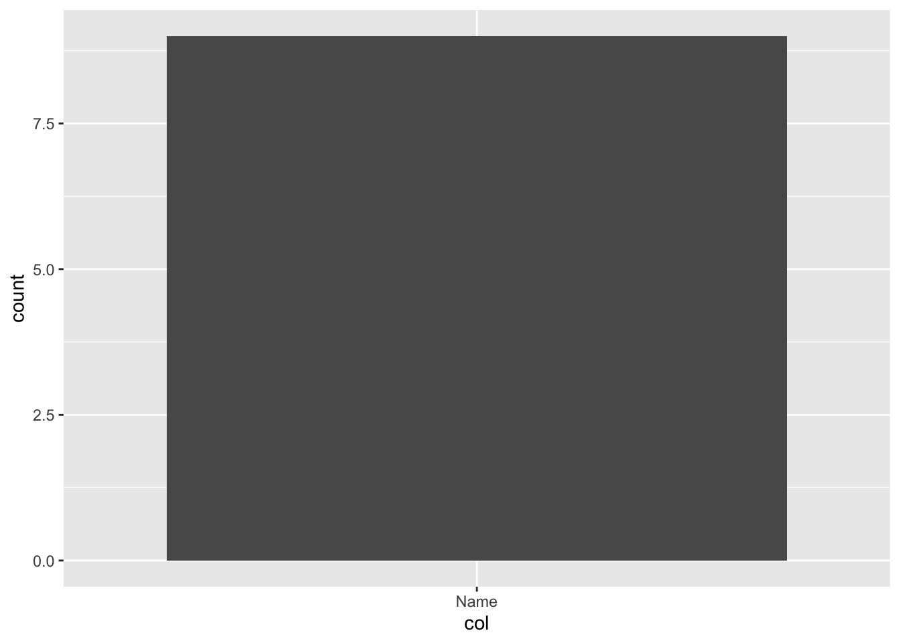
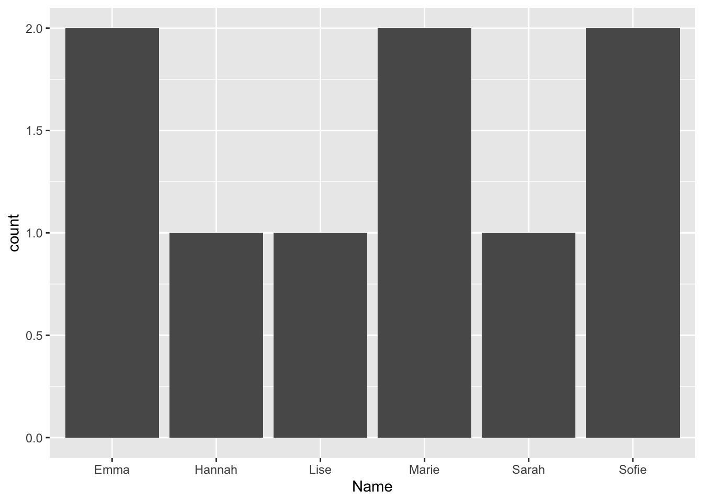
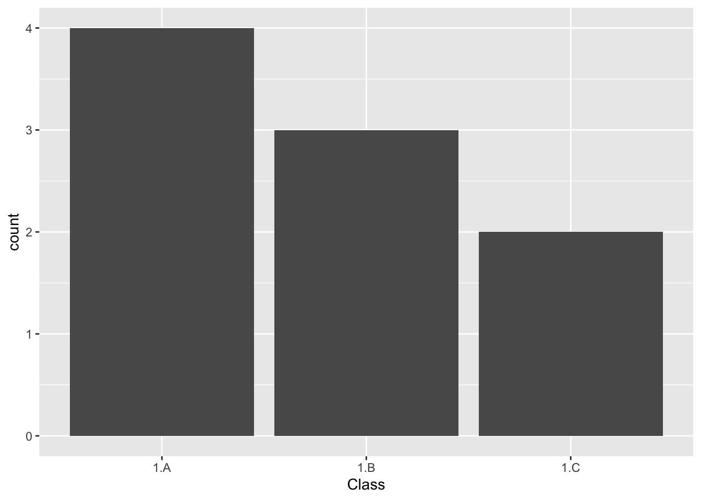
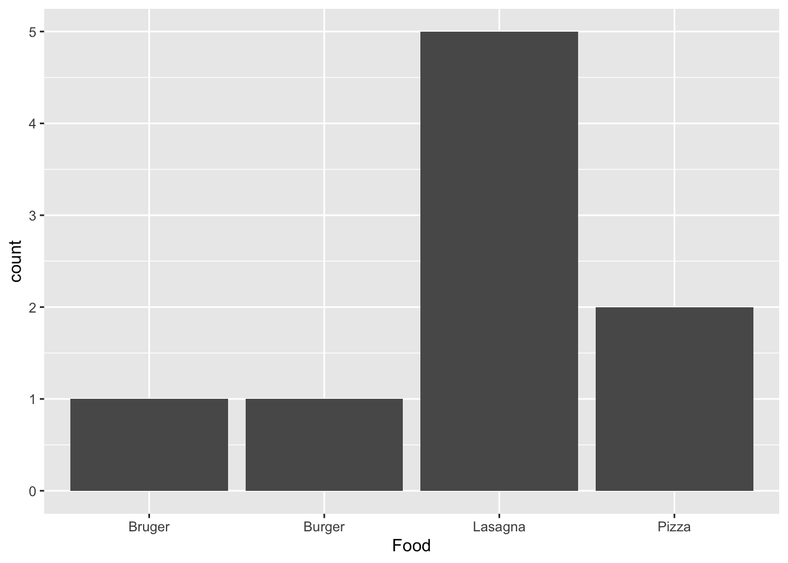
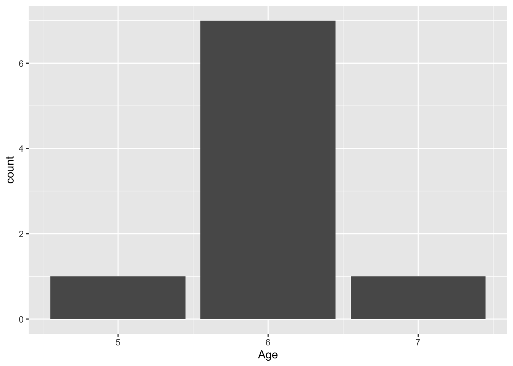

library(tidyverse)Presentation 4A: Scripting in R - Conditions and For-loops
In this section we will learn more about flow control and how to make more complex code constructs in R.
If-else statments
If-else statements are essential if you want your program to do different things depending on a condition. Here we see how to code them in R.
First define some variables.
num1 <- 8
num2 <- 5Now that we have variables, we can test logical statement between them: Is num1 larger than num2? The result of a logical statement is always one of either TRUE or FALSE:
num1 > num2[1] TRUEIs num1 smaller than num2?
num1 < num2[1] FALSEWe use logical statements inside an if statement to define a condition.
if (num1 > num2){
statement <- paste(num1, 'is larger than', num2)
}
print(statement)[1] "8 is larger than 5"We can add an else if to test multiple conditions. else is what applies when all previous checks where FALSE.
Now we have three possible outcomes:
#try with different values for num2
num2 <- 10
if (num1 > num2){
statement <- paste(num1, 'is larger than', num2)
} else if (num1 < num2) {
statement <- paste(num1, 'is smaller than', num2)
} else {
statement <- paste(num1, 'is equal to', num2)
}
print(statement)[1] "8 is smaller than 10"And and or operations
Check values of num1 and num2
num1[1] 8num2[1] 10# num1 <- 14
# num2 <- 12You can give multiple conditions and check if both of them are true with the & (and-operation).
if (num1 < 10 & num2 < 10) {
print('Both numbers are lower than 10')
} else {
print('Both numbers are not lower than 10')
}[1] "Both numbers are not lower than 10"You can also check if either one or the other is true with the | (or-operation).
if (num1 < 10 | num2 < 10) {
print('One or both of the numbers are lower than 10.')
} else {
print('None of the numbers are not lower than 10')
}[1] "One or both of the numbers are lower than 10."When you use complex conditions it can be necessary to use parenthesis to show what should be evaluated first.
In the example below, we first evaluate whether num1 or num2 is larger than 10, and we will receive a TRUE or FALSE answer. We then combine that with the condition that num3 shoud be exactly 10.
# num1 <- 8
# num2 <- 5
num3 <- 10if ((num1 < 10 | num2 < 10) & num3 == 10) {
print('Yes')
} else {
print('No')
}[1] "Yes"For-loops
Defining a for loop
Many functions in R are already vectorized, i.e.
df <- tibble(num1 = 1:10)
df# A tibble: 10 × 1
num1
<int>
1 1
2 2
3 3
4 4
5 5
6 6
7 7
8 8
9 9
10 10df$num2 <- df$num1 * 10
df# A tibble: 10 × 2
num1 num2
<int> <dbl>
1 1 10
2 2 20
3 3 30
4 4 40
5 5 50
6 6 60
7 7 70
8 8 80
9 9 90
10 10 100The above code applies * 10 to each element of column num1 without us having to invoke a loop.
But sometimes we want to iterate over the elements manually because the situation requires it. For that case we can use a for loop.
We first define a list containing both numeric and character elements.
list1 <- list(1, 2, 6, 3, 2, 'hello', 'world', 'yes', 7, 8, 12, 15)To loop through list1, we define a loop variable (here called element), which takes the value of each item in the vector, one at a time.
for (element in list1) {
print(element)
}[1] 1
[1] 2
[1] 6
[1] 3
[1] 2
[1] "hello"
[1] "world"
[1] "yes"
[1] 7
[1] 8
[1] 12
[1] 15The loop variable name is arbitrary - you can call it anything. For example, we can use THIS_VARIABLE and get the same result. Point is, it does not matter what you call the variable, just avoid overwriting an important variable of your script.
for (THIS_VARIABLE in list1) {
print(THIS_VARIABLE)
}[1] 1
[1] 2
[1] 6
[1] 3
[1] 2
[1] "hello"
[1] "world"
[1] "yes"
[1] 7
[1] 8
[1] 12
[1] 15After you loop through a vector or a list, the value of the loop variable is always the last element of your vector. The variable is hence a global variable.
THIS_VARIABLE[1] 15Loop control
There are two loop control statements we can use to: next and break
next jumps to the next iteration. Here, we print every element in list1 and when the element is ‘hello’ we jump to the next iteration.
for (element in list1) {
if(element == 'hello'){
next
}
print(element)
}[1] 1
[1] 2
[1] 6
[1] 3
[1] 2
[1] "world"
[1] "yes"
[1] 7
[1] 8
[1] 12
[1] 15break ends the loop before finishing. Here, we print every element in list1 and when the element is ‘hello’ we break (end) the loop.
for (element in list1) {
if(element == 'hello'){
break
}
print(element)
}[1] 1
[1] 2
[1] 6
[1] 3
[1] 2Which data constructs are iterable in R?
Vectors:
my_vector <- c(1, 2, 3, 4, 5)
for (elem in my_vector) {
print(elem)
}[1] 1
[1] 2
[1] 3
[1] 4
[1] 5Lists:
my_list <- list(a = 1, b = "Hello", c = TRUE)
for (elem in my_list) {
print(elem)
}[1] 1
[1] "Hello"
[1] TRUEDataframes and tibbles:
my_df <- data.frame(A = 1:3, B = c("X", "Y", "Z"))
my_df A B
1 1 X
2 2 Y
3 3 Z#column-wise
for (col in my_df) {
print(col)
}[1] 1 2 3
[1] "X" "Y" "Z"For row-wise iteration you can for example use the row index:
for (i in 1:nrow(my_df)) {
print(i)
#print row i
print(my_df[i,])
}[1] 1
A B
1 1 X
[1] 2
A B
2 2 Y
[1] 3
A B
3 3 ZPlotting in loops
Create data
plot_data_1 <- tibble(Name = c('Marie', 'Marie', 'Emma', 'Sofie', 'Sarah', 'Sofie', 'Hannah', 'Lise', 'Emma'),
Class = c('1.A', '1.A', '1.A', '1.A', '1.B', '1.B', '1.B', '1.C', '1.C'),
Food = c('Lasagna', 'Pizza', 'Pizza', 'Bruger', 'Lasagna', 'Lasagna', 'Lasagna', 'Burger', 'Lasagna'),
Age = c(6, 6, 6, 6, 6, 5, 7, 6, 6))
head(plot_data_1, n = 2)# A tibble: 2 × 4
Name Class Food Age
<chr> <chr> <chr> <dbl>
1 Marie 1.A Lasagna 6
2 Marie 1.A Pizza 6Barplot of each variable.
ggplot(plot_data_1,
aes(x = Name)) +
geom_bar()
ggplot(plot_data_1,
aes(x = Class)) +
geom_bar()# and so on ...Let’s do it in a for loop!
First, let’s check that the variables we are interested in are iterated correctly.
for (col in colnames(plot_data_1)){
print(col)
}[1] "Name"
[1] "Class"
[1] "Food"
[1] "Age"Great! Now, let’s add the plot function to our for loop.
for (col in colnames(plot_data_1)){
p <- ggplot(plot_data_1,
aes(x = col)) +
geom_bar()
print(p)
}Warning in geom_bar(): All aesthetics have length 1, but the data has 9 rows.
ℹ Please consider using `annotate()` or provide this layer with data containing
a single row.Warning in geom_bar(): All aesthetics have length 1, but the data has 9 rows.
ℹ Please consider using `annotate()` or provide this layer with data containing
a single row.Warning in geom_bar(): All aesthetics have length 1, but the data has 9 rows.
ℹ Please consider using `annotate()` or provide this layer with data containing
a single row.Warning in geom_bar(): All aesthetics have length 1, but the data has 9 rows.
ℹ Please consider using `annotate()` or provide this layer with data containing
a single row.That was not what we wanted…
Wrap the !!sym() function around the string formatted column name when passing it in aesthetic.
sym()turns a string into a symbol (column reference)!!unquotes the symbol to use it inaes()
for (col in colnames(plot_data_1)){
p <- ggplot(plot_data_1,
aes(x = !!sym(col))) +
geom_bar()
print(p)
}



!!sym(col) should also be used for other tidyverse operations (filter, select, …) where you pass the column names in string format.
If-else in loops
We can now use what we have learned to loop through our list1 and multiply all numeric values with 10:
#to remember contents:
list1[[1]]
[1] 1
[[2]]
[1] 2
[[3]]
[1] 6
[[4]]
[1] 3
[[5]]
[1] 2
[[6]]
[1] "hello"
[[7]]
[1] "world"
[[8]]
[1] "yes"
[[9]]
[1] 7
[[10]]
[1] 8
[[11]]
[1] 12
[[12]]
[1] 15for (element in list1) {
if (is.numeric(element)){
statement <- paste(element, 'times 10 is', element*10)
} else {
statement <- paste(element, 'is not a number!')
}
print(statement)
}[1] "1 times 10 is 10"
[1] "2 times 10 is 20"
[1] "6 times 10 is 60"
[1] "3 times 10 is 30"
[1] "2 times 10 is 20"
[1] "hello is not a number!"
[1] "world is not a number!"
[1] "yes is not a number!"
[1] "7 times 10 is 70"
[1] "8 times 10 is 80"
[1] "12 times 10 is 120"
[1] "15 times 10 is 150"Note: that this does not work with a vector, i.e. vec <- c(1,2,'hello') because vectors can only contain one data type so all elements of vec are characters.
Save results
Let’s say we want to save the non-numeric values. We can do this in a list.
Initiate list for saving non-numeric values.
non_numeric_values <- list()Append the non-numeric values to the list.
for (element in list1) {
if (is.numeric(element)){
next
} else {
non_numeric_values <- append(non_numeric_values, element)
}
}View list.
non_numeric_values[[1]]
[1] "hello"
[[2]]
[1] "world"
[[3]]
[1] "yes"While-loop
While-loops are not commonly used in R since they are ineffective in this language. We will demonstrate how they work since they are common in other programming languages.
Say we want to create a list where each element is the letter “A” followed by a number, starting from 0 and going up to 99 We can do this using a while-loop that keeps appending “A_
First, let’s initially the counter count that will count the number of times we go through the while-loop.
count <- 0
list2 <- list()Now, we can make our while-loop. In each iteration we add 1 to the counter.
while (count < 100) {
list2 <- append(list2, paste('A_', count, sep = ''))
count = count + 1
}Check count
count[1] 100Check length of list as well as the first and the last element.
length(list2) [1] 100list2[[1]][1] "A_0"list2[[length(list2)]][1] "A_99"They way you would do it in R:
list3 <- paste('A_', 1:100, sep = '') %>% as.list()
# list3